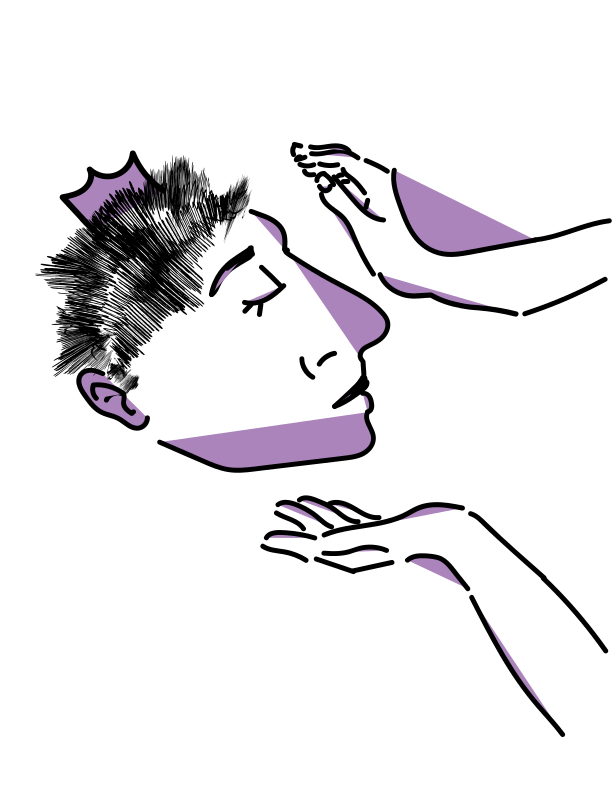

Houses are a big part of ballroom culture. During the time of the 1970s and 80s, queer kids, more specifically queer kids of color, wouldn't get the acceptance from their family, resulting in them getting kicked out. Most of these kids would be left on the streets with no where to go. This is how houses got created in the ballroom scene as these people would create their own communities that result in them giving each other the love and support they need.

Houses are usually run by the house mothers or house fathers. They are the head of the houses and set the rules/tone of the house. Like real parental figures, they take care of the house children and take in new children as well, giving them a place they can call home. This aspect of found family is really important in ballroom culture and the LGBTQ+ community in general as acceptance never really came that easily, especially for queer people of color.
The names of houses are usually named after fashion brands or beauty icons. Examples of popular houses would be:
House of Gucci, House of Balenciaga, House of Ebony, House of Ninja, House of Xtravaganza
House of Xtravaganza
The House of Xtravaganza is one of the most well known houses to emerge from the New York City ballroom scene. The house was founded in 1982 (before spelled as House of Extravaganza) by Hector Valle, creating an all Latinx ballroom house. When Hector was getting members for his house, he stumbled upon a transgender woman, who is now known as Angie Xtravaganza. Angie then took on the role of being the house mother. Along with Angie came Hector Crespo or better known as Hector Xtravaganza who joined the house in 1982. Although Angie was only months older than Hector Xtravaganza, she had this maternal energy to her that came naturally, allowing for her to take on the role of house mother with ease. Unfortunately, the AIDS crisis in the 1990s hit the Xtravaganza's and other ballroom houses very hard, resulting in Angie to die from AIDS on March 31, 1993. Hector then became the house father after Angie.
Hector Xtravaganza was like many other kids in the LGBTQ+ community as that time as he got kicked out as a teen and did not get the opportunity to finish high school. He represented the house by competing in categories like "face" and "model's effect", where he gained a reputation for being a worthy competitor on the runway. Once he became the father of the house, took on his role by using his ballroom fame to support HIV/AIDS awareness campaigns and projects. As he was HIV positive himself, he wanted to bring show his support and shine a light on the crisis. He also hosted a lot of events for the ballroom community, gaining a reputation as an advisor to the younger members of the ballroom scene and to other houses as well. In 2004, he became the honorary house grandfather with Jose Gutierez Xtravaganza becoming the father of the house. Throughout his journey he took part in pop culture media, whether he was in a movie like the documentary Paris Is Burning or took part in assisting for TV shows like Pose. On December 30, 2018, he died of lymphoma, but this legacy that he took part in creating continues as ballroom gains more popularity each year.